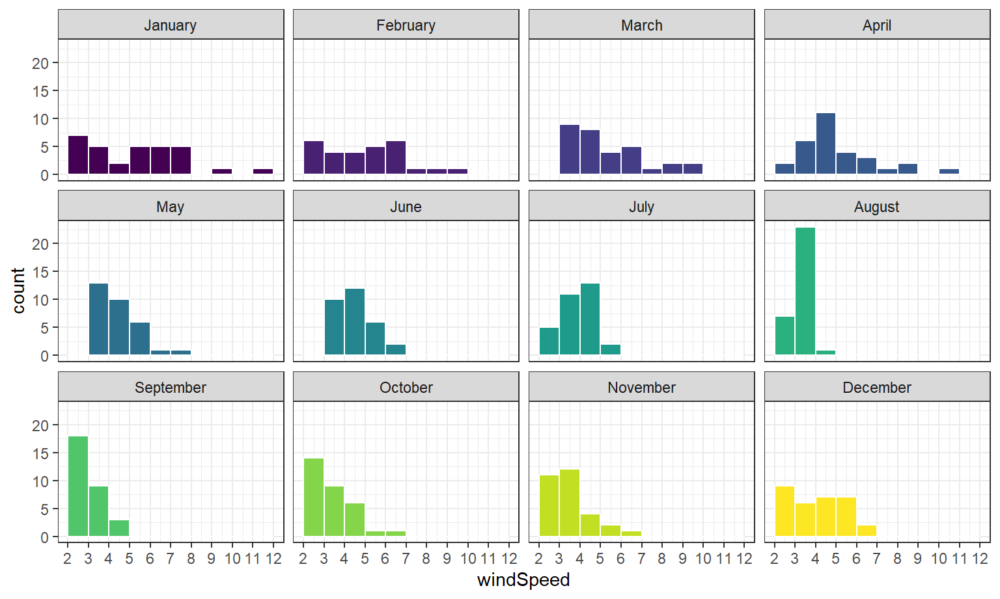

Visualizing Uncertainty
In-Class Exercise
Setup:
You’ll need to download one CSV files and put them somewhere on your computer (or upload it to RStudio.cloud if you’ve gone that direction)—preferably in a folder named data in your project folder. You can download the data from the link below:
Task:
Explore the relationship between the vote margin in a given district and whether the congressperson voted with or against President Biden’s position.
Regularly Scheduled Content
Probabilistic thinking is central in the human experience. How we describe that thinking is mixed, but most of the time we use (rather imprecise) language. With only a few moments of searching, one can find thousands of articles that use probabilistic words to describe events. Here are some examples:
“‘Highly unlikely’ State of the Union will happen amid shutdown” – The Hill
“Tiger Woods makes Masters 15th and most improbable major” – Fox
“Trump predicts ‘very good chance’ of China trade deal” – CNN
Yet people don’t have a good sense of what these things mean. Uncertainty is key to data analytics: if we were certain of things, A study in the 1960s explored the perception of probabilistic words like these among NATO officers. A more modern replication of this found the following basic pattern:
A deep, basic fact about humans is that we struggle to understand probabilities. But visualizing things can help. The graphic above shows the uncertainty about uncertainty (very meta). We can convey all manner of uncertainty with clever graphics. Today’s practical example works through some of the myriad of ways to visualize variable data. We’ll cover some territory that we’ve already hit, in hopes of locking in some key concepts.
Part 1: Statistical Inference and Polls
In this Example we will describe, in some detail, how poll aggregators such as FiveThirtyEight use data to predict election outcomes. To understand how they do this, we first need to learn the basics of Statistical Inference, the part of statistics that helps distinguish patterns arising from signal from those arising from chance. Statistical inference is a broad topic and here we go over the very basics using polls as a motivating example. To describe the concepts, we complement the mathematical formulas with Monte Carlo simulations and R code.
Polls
Opinion polling has been conducted since the 19th century. The general goal is to describe the opinions held by a specific population on a given set of topics. In recent times, these polls have been pervasive during presidential elections. Polls are useful when interviewing every member of a particular population is logistically impossible. The general strategy is to interview a smaller group, chosen at random, and then infer the opinions of the entire population from the opinions of the smaller group. Statistical theory is used to justify the process. This theory is referred to as inference and it is the main topic of this chapter.
Perhaps the best known opinion polls are those conducted to determine which candidate is preferred by voters in a given election. Political strategists make extensive use of polls to decide, among other things, how to invest resources. For example, they may want to know in which geographical locations to focus their “get out the vote” efforts.
Elections are a particularly interesting case of opinion polls because the actual opinion of the entire population is revealed on election day. Of course, it costs millions of dollars to run an actual election which makes polling a cost effective strategy for those that want to forecast the results.
Although typically the results of these polls are kept private, similar polls are conducted by news organizations because results tend to be of interest to the general public and made public. We will eventually be looking at such data.
Real Clear Politics1 is an example of a news aggregator that organizes and publishes poll results. For example, they present the following poll results reporting estimates of the popular vote for the 2016 presidential election2:
Although in the United States the popular vote does not determine the result of the presidential election, we will use it as an illustrative and simple example of how well polls work. Forecasting the election is a more complex process since it involves combining results from 50 states and DC and we will go into some detail on this later.
Let’s make some observations about the table above. First, note that different polls, all taken days before the election, report a different spread: the estimated difference between support for the two candidates. Notice also that the reported spreads hover around what ended up being the actual result: Clinton won the popular vote by 2.1%. We also see a column titled MoE which stands for margin of error.
In this example, we will show how the probability concepts we learned in the previous content can be applied to develop the statistical approaches that make polls an effective tool. We will learn the statistical concepts necessary to define estimates and margins of errors, and show how we can use these to forecast final results relatively well and also provide an estimate of the precision of our forecast. Once we learn this, we will be able to understand two concepts that are ubiquitous in data science: confidence intervals and p-values. Finally, to understand probabilistic statements about the probability of a candidate winning, we will have to learn about Bayesian modeling. In the final sections, we put it all together to recreate the simplified version of the FiveThirtyEight model and apply it to the 2016 election.
We start by connecting probability theory to the task of using polls to learn about a population.
The sampling model for polls
To help us understand the connection between polls and what we have learned, let’s construct a similar situation to the one pollsters face. To mimic the challenge real pollsters face in terms of competing with other pollsters for media attention, we will use an urn full of beads to represent voters and pretend we are competing for a $25 dollar prize. The challenge is to guess the spread between the proportion of blue and red beads in this hypothetical urn.
Before making a prediction, you can take a sample (with replacement) from the urn. To mimic the fact that running polls is expensive, it costs you 10 cents per each bead you sample. Therefore, if your sample size is 250, and you win, you will break even since you will pay \$25 to collect your \$25 prize. Your entry into the competition can be an interval. If the interval you submit contains the true proportion, you get half what you paid and pass to the second phase of the competition. In the second phase, the entry with the smallest interval is selected as the winner.
The dslabs package includes a function that shows a random draw from this urn:
library(tidyverse)
library(dslabs)
take_poll(25)Think about how you would construct your interval based on the data shown above.
We have just described a simple sampling model for opinion polls. The beads inside the urn represent the individuals that will vote on election day. Those that will vote for the Republican candidate are represented with red beads and the Democrats with the blue beads. For simplicity, assume there are no other colors. That is, that there are just two parties: Republican and Democratic.
Populations, samples, parameters, and estimates
We want to predict the proportion of blue beads in the urn. Let’s call this quantity \(p\), which then tells us the proportion of red beads \(1-p\), and the spread \(p - (1-p)\), which simplifies to \(2p - 1\).
In statistical textbooks, the beads in the urn are called the population. The proportion of blue beads in the population \(p\) is called a parameter. The 25 beads we see in the previous plot are called a sample. The task of statistical inference is to predict the parameter \(p\) using the observed data in the sample.
Can we do this with the 25 observations above? It is certainly informative. For example, given that we see 13 red and 12 blue beads, it is unlikely that \(p\) > .9 or \(p\) < .1. But are we ready to predict with certainty that there are more red beads than blue in the jar?
We want to construct an estimate of \(p\) using only the information we observe. An estimate should be thought of as a summary of the observed data that we think is informative about the parameter of interest. It seems intuitive to think that the proportion of blue beads in the sample \(0.48\) must be at least related to the actual proportion \(p\). But do we simply predict \(p\) to be 0.48? First, remember that the sample proportion is a random variable. If we run the command take_poll(25) four times, we get a different answer each time, since the sample proportion is a random variable.

Note that in the four random samples shown above, the sample proportions range from 0.44 to 0.60. By describing the distribution of this random variable, we will be able to gain insights into how good this estimate is and how we can make it better.
The sample average
Conducting an opinion poll is being modeled as taking a random sample from an urn. We are proposing the use of the proportion of blue beads in our sample as an estimate of the parameter \(p\). Once we have this estimate, we can easily report an estimate for the spread \(2p-1\), but for simplicity we will illustrate the concepts for estimating \(p\). We will use our knowledge of probability to defend our use of the sample proportion and quantify how close we think it is from the population proportion \(p\).
We start by defining the random variable \(X\) as: \(X=1\) if we pick a blue bead at random and \(X=0\) if it is red. This implies that the population is a list of 0s and 1s. If we sample \(N\) beads, then the average of the draws \(X_1, \dots, X_N\) is equivalent to the proportion of blue beads in our sample. This is because adding the \(X\)s is equivalent to counting the blue beads and dividing this count by the total \(N\) is equivalent to computing a proportion. We use the symbol \(\bar{X}\) to represent this average. In general, in statistics textbooks a bar on top of a symbol means the average. The theory we just learned about the sum of draws becomes useful because the average is a sum of draws multiplied by the constant \(1/N\):
\[\bar{X} = 1/N \times \sum_{i=1}^N X_i\]
For simplicity, let’s assume that the draws are independent: after we see each sampled bead, we return it to the urn. In this case, what do we know about the distribution of the sum of draws? First, we know that the expected value of the sum of draws is \(N\) times the average of the values in the urn. We know that the average of the 0s and 1s in the urn must be \(p\), the proportion of blue beads.
Here we encounter an important difference with what we did in the Probability chapter: we don’t know what is in the urn. We know there are blue and red beads, but we don’t know how many of each. This is what we want to find out: we are trying to estimate \(p\).
Parameters
Just like we use variables to define unknowns in systems of equations, in statistical inference we define parameters to define unknown parts of our models. In the urn model which we are using to mimic an opinion poll, we do not know the proportion of blue beads in the urn. We define the parameters \(p\) to represent this quantity. \(p\) is the average of the urn because if we take the average of the 1s (blue) and 0s (red), we get the proportion of blue beads. Since our main goal is figuring out what is \(p\), we are going to estimate this parameter.
The ideas presented here on how we estimate parameters, and provide insights into how good these estimates are, extrapolate to many data science tasks. For example, we may want to determine the difference in health improvement between patients receiving treatment and a control group. We may ask, what are the health effects of smoking on a population? What are the differences in racial groups of fatal shootings by police? What is the rate of change in life expectancy in the US during the last 10 years? All these questions can be framed as a task of estimating a parameter from a sample.
Polling versus forecasting
Before we continue, let’s make an important clarification related to the practical problem of forecasting the election. If a poll is conducted four months before the election, it is estimating the \(p\) for that moment and not for election day. The \(p\) for election night might be different since people’s opinions fluctuate through time. The polls provided the night before the election tend to be the most accurate since opinions don’t change that much in a day. However, forecasters try to build tools that model how opinions vary across time and try to predict the election night results taking into consideration the fact that opinions fluctuate. We will describe some approaches for doing this in a later section.
Properties of our estimate: expected value and standard error
To understand how good our estimate is, we will describe the statistical properties of the random variable defined above: the sample proportion \(\bar{X}\). Remember that \(\bar{X}\) is the sum of independent draws so the rules we covered in the probability chapter apply.
Using what we have learned, the expected value of the sum \(N\bar{X}\) is \(N \times\) the average of the urn, \(p\). So dividing by the non-random constant \(N\) gives us that the expected value of the average \(\bar{X}\) is \(p\). We can write it using our mathematical notation:
\[ \mbox{E}(\bar{X}) = p \]
We can also use what we learned to figure out the standard error: the standard error of the sum is \(\sqrt{N} \times\) the standard deviation of the urn. Can we compute the standard error of the urn? We learned a formula that tells us that it is \((1-0) \sqrt{p (1-p)}\) = \(\sqrt{p (1-p)}\). Because we are dividing the sum by \(N\), we arrive at the following formula for the standard error of the average:
\[ \mbox{SE}(\bar{X}) = \sqrt{p(1-p)/N} \]
This result reveals the power of polls. The expected value of the sample proportion \(\bar{X}\) is the parameter of interest \(p\) and we can make the standard error as small as we want by increasing \(N\). The law of large numbers tells us that with a large enough poll, our estimate converges to \(p\).
If we take a large enough poll to make our standard error about 1%, we will be quite certain about who will win. But how large does the poll have to be for the standard error to be this small?
One problem is that we do not know \(p\), so we can’t compute the standard error. However, for illustrative purposes, let’s assume that \(p=0.51\) and make a plot of the standard error versus the sample size \(N\):
From the plot we see that we would need a poll of over 10,000 people to get the standard error that low. We rarely see polls of this size due in part to costs. From the Real Clear Politics table, we learn that the sample sizes in opinion polls range from 500-3,500 people. For a sample size of 1,000 and \(p=0.51\), the standard error is:
sqrt(p*(1-p))/sqrt(1000)[1] 0.01580823or 1.5 percentage points. So even with large polls, for close elections, \(\bar{X}\) can lead us astray if we don’t realize it is a random variable. Nonetheless, we can actually say more about how close we get the \(p\).
Central Limit Theorem
The Central Limit Theorem (CLT) tells us that the distribution function for a sum of draws is approximately normal. You also may recall that dividing a normally distributed random variable by a constant is also a normally distributed variable. This implies that the distribution of \(\bar{X}\) is approximately normal.
In summary, we have that \(\bar{X}\) has an approximately normal distribution with expected value \(p\) and standard error \(\sqrt{p(1-p)/N}\).
Now how does this help us? Suppose we want to know what is the probability that we are within 1% from \(p\). We are basically asking what is
\[ \mbox{Pr}(| \bar{X} - p| \leq .01) \] which is the same as:
\[ \mbox{Pr}(\bar{X}\leq p + .01) - \mbox{Pr}(\bar{X} \leq p - .01) \]
Can we answer this question? We can use the mathematical trick we learned in the previous chapter. Subtract the expected value and divide by the standard error to get a standard normal random variable, call it \(Z\), on the left. Since \(p\) is the expected value and \(\mbox{SE}(\bar{X}) = \sqrt{p(1-p)/N}\) is the standard error we get:
\[ \mbox{Pr}\left(Z \leq \frac{ \,.01} {\mbox{SE}(\bar{X})} \right) - \mbox{Pr}\left(Z \leq - \frac{ \,.01} {\mbox{SE}(\bar{X})} \right) \]
One problem we have is that since we don’t know \(p\), we don’t know \(\mbox{SE}(\bar{X})\). But it turns out that the CLT still works if we estimate the standard error by using \(\bar{X}\) in place of \(p\). We say that we plug-in the estimate. Our estimate of the standard error is therefore:
\[ \hat{\mbox{SE}}(\bar{X})=\sqrt{\bar{X}(1-\bar{X})/N} \] In statistics textbooks, we use a little hat to denote estimates. The estimate can be constructed using the observed data and \(N\).
Now we continue with our calculation, but dividing by \(\hat{\mbox{SE}}(\bar{X})=\sqrt{\bar{X}(1-\bar{X})/N})\) instead. In our first sample we had 12 blue and 13 red so \(\bar{X} = 0.48\) and our estimate of standard error is:
x_hat <- 0.48
se <- sqrt(x_hat*(1-x_hat)/25)
se[1] 0.09991997And now we can answer the question of the probability of being close to \(p\). The answer is:
pnorm(0.01/se) - pnorm(-0.01/se)[1] 0.07971926Therefore, there is a small chance that we will be close. A poll of only \(N=25\) people is not really very useful, at least not for a close election.
Margin of Error
Earlier we mentioned the margin of error. Now we can define it because it is simply 1.96 times the standard error, which we can now estimate. In our case it is:
1.96*se[1] 0.1958431Why do we multiply by 1.96? Because if you ask what is the probability that we are within 1.96 standard errors from \(p\), we get:
\[ \mbox{Pr}\left(Z \leq \, 1.96\,\mbox{SE}(\bar{X}) / \mbox{SE}(\bar{X}) \right) - \mbox{Pr}\left(Z \leq - 1.96\, \mbox{SE}(\bar{X}) / \mbox{SE}(\bar{X}) \right) \] which is:
\[ \mbox{Pr}\left(Z \leq 1.96 \right) - \mbox{Pr}\left(Z \leq - 1.96\right) \]
which we know is about 95%:
pnorm(1.96)-pnorm(-1.96)[1] 0.9500042Hence, there is a 95% probability that \(\bar{X}\) will be within \(1.96\times \hat{SE}(\bar{X})\), in our case within about 0.2, of \(p\). Note that 95% is somewhat of an arbitrary choice and sometimes other percentages are used, but it is the most commonly used value to define margin of error. We often round 1.96 up to 2 for simplicity of presentation.
In summary, the CLT tells us that our poll based on a sample size of \(25\) is not very useful. We don’t really learn much when the margin of error is this large. All we can really say is that the popular vote will not be won by a large margin. This is why pollsters tend to use larger sample sizes.
From the table above, we see that typical sample sizes range from 700 to 3500. To see how this gives us a much more practical result, notice that if we had obtained a \(\bar{X}\)=0.48 with a sample size of 2,000, our standard error \(\hat{\mbox{SE}}(\bar{X})\) would have been 0.0111714. So our result is an estimate of 48% with a margin of error of 2%. In this case, the result is much more informative and would make us think that there are more red balls than blue. Keep in mind, however, that this is hypothetical. We did not take a poll of 2,000 since we don’t want to ruin the competition.
A Monte Carlo simulation
(Optional) Suppose we want to use a Monte Carlo simulation to corroborate the tools we have built using probability theory. To create the simulation, we would write code like this:
B <- 10000
N <- 1000
x_hat <- replicate(B, {
x <- sample(c(0,1), size = N, replace = TRUE, prob = c(1-p, p))
mean(x)
})The problem is, of course, we don’t know p. We could construct an urn like the one pictured above and run an analog (without a computer) simulation. It would take a long time, but you could take 10,000 samples, count the beads and keep track of the proportions of blue. We can use the function take_poll(n=1000) instead of drawing from an actual urn, but it would still take time to count the beads and enter the results.
One thing we therefore do to corroborate theoretical results is to pick one or several values of p and run the simulations. Let’s set p=0.45. We can then simulate a poll:
p <- 0.45
N <- 1000
x <- sample(c(0,1), size = N, replace = TRUE, prob = c(1-p, p))
x_hat <- mean(x)In this particular sample, our estimate is x_hat. We can use that code to do a Monte Carlo simulation:
B <- 10000
x_hat <- replicate(B, {
x <- sample(c(0,1), size = N, replace = TRUE, prob = c(1-p, p))
mean(x)
})To review, the theory tells us that \(\bar{X}\) is approximately normally distributed, has expected value \(p=\) 0.45 and standard error \(\sqrt{p(1-p)/N}\) = 0.0157321. The simulation confirms this:
mean(x_hat)[1] 0.4500761sd(x_hat)[1] 0.01579523A histogram and qq-plot confirm that the normal approximation is accurate as well:

Of course, in real life we would never be able to run such an experiment because we don’t know \(p\). But we could run it for various values of \(p\) and \(N\) and see that the theory does indeed work well for most values. You can easily do this by re-running the code above after changing p and N.
The spread
The competition is to predict the spread, not the proportion \(p\). However, because we are assuming there are only two parties, we know that the spread is \(p - (1-p) = 2p - 1\). As a result, everything we have done can easily be adapted to an estimate of \(2p - 1\). Once we have our estimate \(\bar{X}\) and \(\hat{\mbox{SE}}(\bar{X})\), we estimate the spread with \(2\bar{X} - 1\) and, since we are multiplying by 2, the standard error is \(2\hat{\mbox{SE}}(\bar{X})\). Note that subtracting 1 does not add any variability so it does not affect the standard error.
For our 25 item sample above, our estimate \(p\) is .48 with margin of error .20 and our estimate of the spread is 0.04 with margin of error .40. Again, not a very useful sample size. However, the point is that once we have an estimate and standard error for \(p\), we have it for the spread \(2p-1\).
Bias: why not run a very large poll?
For realistic values of \(p\), say from 0.35 to 0.65, if we run a very large poll with 100,000 people, theory tells us that we would predict the election perfectly since the largest possible margin of error is around 0.3%:
Warning: `qplot()` was deprecated in ggplot2 3.4.0.
One reason is that running such a poll is very expensive. Another possibly more important reason is that theory has its limitations. Polling is much more complicated than picking beads from an urn. Some people might lie to pollsters and others might not have phones. But perhaps the most important way an actual poll differs from an urn model is that we actually don’t know for sure who is in our population and who is not. How do we know who is going to vote? Are we reaching all possible voters? Hence, even if our margin of error is very small, it might not be exactly right that our expected value is \(p\). We call this bias. Historically, we observe that polls are indeed biased, although not by that much. The typical bias appears to be about 1-2%. This makes election forecasting a bit more interesting and we will talk about how to model this in our Assignment for this week.
Part 2: (Supplemental) Additional Visualization Techniques
For this second part of the example, we’re going to use historical weather data from Dark Sky about wind speed and temperature trends for downtown Atlanta (specifically 33.754557, -84.390009) in 2019. We downloaded this data using Dark Sky’s (about-to-be-retired-because-they-were-bought-by-Apple) API using the darksky package.
If you want to follow along with this example, you can download the data below (you’ll likely need to right click and choose “Save Link As…”):
Code
Load and clean data
First, we load the libraries we’ll be using:
library(tidyverse)
library(lubridate)
library(ggridges)
library(gghalves)Then we load the data with read_csv(). Here we assume that the CSV file lives in a subfolder in my project named data. Naturally, you’ll need to point this to wherever you stashed the data.
weather_atl_raw <- read_csv("data/atl-weather-2019.csv")We’ll add a couple columns that we can use for faceting and filling using the month() and wday() functions from lubridate for extracting parts of the date:
weather_atl <- weather_atl_raw %>%
mutate(Month = month(time, label = TRUE, abbr = FALSE),
Day = wday(time, label = TRUE, abbr = FALSE))Now we’re ready to go!
Histograms
We can first make a histogram of wind speed. We’ll use a bin width of 1 and color the edges of the bars white:
ggplot(weather_atl, aes(x = windSpeed)) +
geom_histogram(binwidth = 1, color = "white")
This is fine enough, but we can improve it by forcing the buckets/bins to start at whole numbers instead of containing ranges like 2.5–3.5. We’ll use the boundary argument for that. We also add scale_x_continuous() to add our own x-axis breaks instead of having things like 2.5, 5, and 7.5:
ggplot(weather_atl, aes(x = windSpeed)) +
geom_histogram(binwidth = 1, color = "white", boundary = 1) +
scale_x_continuous(breaks = seq(0, 12, by = 1))We can show the distribution of wind speed by month if we map the Month column we made onto the fill aesthetic:
ggplot(weather_atl, aes(x = windSpeed, fill = Month)) +
geom_histogram(binwidth = 1, color = "white", boundary = 1) +
scale_x_continuous(breaks = seq(0, 12, by = 1))
This is colorful, but it’s impossible to actually interpret. Instead of only filling, we’ll also facet by month to see separate graphs for each month. We can turn off the fill legend because it’s now redundant.
ggplot(weather_atl, aes(x = windSpeed, fill = Month)) +
geom_histogram(binwidth = 1, color = "white", boundary = 1) +
scale_x_continuous(breaks = seq(0, 12, by = 1)) +
guides(fill = FALSE) +
facet_wrap(vars(Month))Warning: The `<scale>` argument of `guides()` cannot be `FALSE`. Use "none" instead as
of ggplot2 3.3.4.
Neat! January, March, and April appear to have the most variation in windy days, with a few wind-less days and a few very-windy days, while August was very wind-less.
Density plots
The code to create a density plot is nearly identical to what we used for the histogram—the only thing we change is the geom layer:
ggplot(weather_atl, aes(x = windSpeed)) +
geom_density(color = "grey20", fill = "grey50")If we want, we can mess with some of the calculus options like the kernel and bandwidth:
ggplot(weather_atl, aes(x = windSpeed)) +
geom_density(color = "grey20", fill = "grey50",
bw = 0.1, kernel = "epanechnikov")We can also fill by month. We’ll make the different layers 50% transparent so we can kind of see through the whole stack:
ggplot(weather_atl, aes(x = windSpeed, fill = Month)) +
geom_density(alpha = 0.5)Even with the transparency, this is really hard to interpret. We can fix this by faceting, like we did with the histograms:
ggplot(weather_atl, aes(x = windSpeed, fill = Month)) +
geom_density(alpha = 0.5) +
guides(fill = FALSE) +
facet_wrap(vars(Month))Or we can stack the density plots behind each other with ggridges. For that to work, we also need to map Month to the y-axis. We can reverse the y-axis so that January is at the top if we use the fct_rev() function:
ggplot(weather_atl, aes(x = windSpeed, y = fct_rev(Month), fill = Month)) +
geom_density_ridges() +
guides(fill = FALSE)We can add some extra information to geom_density_ridges() with some other arguments like quantile_lines. We can use the quantiles argument to tell the plow how many parts to be cut into. Since we just want to show the median, we’ll set that to 2 so each density plot is divided in half:
ggplot(weather_atl, aes(x = windSpeed, y = fct_rev(Month), fill = Month)) +
geom_density_ridges(quantile_lines = TRUE, quantiles = 2) +
guides(fill = FALSE)Warning: Using the `size` aesthetic with geom_segment was deprecated in ggplot2 3.4.0.
ℹ Please use the `linewidth` aesthetic instead.
Now that we have good working code, we can easily substitute in other variables by changing the x mapping:
ggplot(weather_atl, aes(x = temperatureHigh, y = fct_rev(Month), fill = Month)) +
geom_density_ridges(quantile_lines = TRUE, quantiles = 2) +
guides(fill = FALSE)We can get extra fancy if we fill by temperature instead of filling by month. To get this to work, we need to use geom_density_ridges_gradient(), and we need to change the fill mapping to the strange looking ..x.., which is a weird ggplot trick that tells it to use the variable we mapped to the x-axis. For whatever reason, fill = temperatureHigh doesn’t work:
ggplot(weather_atl, aes(x = temperatureHigh, y = fct_rev(Month), fill = ..x..)) +
geom_density_ridges_gradient(quantile_lines = TRUE, quantiles = 2) +
scale_fill_viridis_c(option = "plasma") +
labs(x = "High temperature", y = NULL, color = "Temp")Warning: The dot-dot notation (`..x..`) was deprecated in ggplot2 3.4.0.
ℹ Please use `after_stat(x)` instead.
And finally, we can get extra fancy and show the distributions for both the high and low temperatures each month. To make this work, we need to manipulate the data a little. Right now there are two columns for high and low temperature: temperatureLow and temperatureHigh. To be able to map temperature to the x-axis and high vs. low to another aesthetic (like linetype), we need a column with the temperature and a column with an indicator variable for whether it is high or low. This data needs to be tidied (since right now we have a variable (high/low) encoded in the column name). We can tidy this data using pivot_longer() from tidyr, which was already loaded with library(tidyverse). In the RStudio primers, you did this same thing with gather()—pivot_longer() is the newer version of gather():
weather_atl_long <- weather_atl %>%
pivot_longer(cols = c(temperatureLow, temperatureHigh),
names_to = "temp_type",
values_to = "temp") %>%
# Clean up the new temp_type column so that "temperatureHigh" becomes "High", etc.
mutate(temp_type = recode(temp_type,
temperatureHigh = "High",
temperatureLow = "Low")) %>%
# This is optional—just select a handful of columns
select(time, temp_type, temp, Month)
# Show the first few rows
head(weather_atl_long)# A tibble: 6 × 4
time temp_type temp Month
<dttm> <chr> <dbl> <ord>
1 2019-01-01 05:00:00 Low 50.6 January
2 2019-01-01 05:00:00 High 63.9 January
3 2019-01-02 05:00:00 Low 49.0 January
4 2019-01-02 05:00:00 High 57.4 January
5 2019-01-03 05:00:00 Low 53.1 January
6 2019-01-03 05:00:00 High 55.3 JanuaryNow we have a column for the temperature (temp) and a column indicating if it is high or low (temp_type). The dataset is also twice as long (730 rows) because each day has two rows (high and low). Let’s plot it and map high/low to the linetype aesthetic to show high/low in the border of the plots:
ggplot(weather_atl_long, aes(x = temp, y = fct_rev(Month),
fill = ..x.., linetype = temp_type)) +
geom_density_ridges_gradient(quantile_lines = TRUE, quantiles = 2) +
scale_fill_viridis_c(option = "plasma") +
labs(x = "High temperature", y = NULL, color = "Temp")
We can see much wider temperature disparities during the summer, with large gaps between high and low, and relatively equal high/low temperatures during the winter.
Box, violin, and rain cloud plots
Finally, we can look at the distribution of variables with box plots, violin plots, and other similar graphs. First, we’ll make a box plot of windspeed, filled by the Day variable we made indicating weekday:
ggplot(weather_atl,
aes(y = windSpeed, fill = Day)) +
geom_boxplot()
We can switch this to a violin plot by just changing the geom layer and mapping Day to the x-axis:
ggplot(weather_atl,
aes(y = windSpeed, x = Day, fill = Day)) +
geom_violin()With violin plots it’s typically good to overlay other geoms. We can add some jittered points for a strip plot:
ggplot(weather_atl,
aes(y = windSpeed, x = Day, fill = Day)) +
geom_violin() +
geom_point(size = 0.5, position = position_jitter(width = 0.1)) +
guides(fill = FALSE)We can also add larger points for the daily averages. We’ll use a special layer for this: stat_summary(). It has a slightly different syntax, since we’re not actually mapping a column from the dataset. Instead, we’re feeding a column from a dataset into a function (here "mean") and then plotting that result:
ggplot(weather_atl,
aes(y = windSpeed, x = Day, fill = Day)) +
geom_violin() +
stat_summary(geom = "point", fun = "mean", size = 5, color = "white") +
geom_point(size = 0.5, position = position_jitter(width = 0.1)) +
guides(fill = FALSE)We can also show the mean and confidence interval at the same time by changing the summary function:
ggplot(weather_atl,
aes(y = windSpeed, x = Day, fill = Day)) +
geom_violin() +
stat_summary(geom = "pointrange", fun.data = "mean_se", size = 1, color = "white") +
geom_point(size = 0.5, position = position_jitter(width = 0.1)) +
guides(fill = FALSE)
Overlaying the points directly on top of the violins shows extra information, but it’s also really crowded and hard to read. If we use the gghalves package, we can use special halved versions of some of these geoms like so:
ggplot(weather_atl,
aes(x = fct_rev(Day), y = temperatureHigh)) +
geom_half_point(aes(color = Day), side = "l", size = 0.5) +
geom_half_boxplot(aes(fill = Day), side = "r") +
guides(color = FALSE, fill = FALSE)
Note the side argument for specifying which half of the column the geom goes. We can also use geom_half_violin():
ggplot(weather_atl,
aes(x = fct_rev(Day), y = temperatureHigh)) +
geom_half_point(aes(color = Day), side = "l", size = 0.5) +
geom_half_violin(aes(fill = Day), side = "r") +
guides(color = FALSE, fill = FALSE)
If we flip the plot, we can make a rain cloud plot:
ggplot(weather_atl,
aes(x = fct_rev(Day), y = temperatureHigh)) +
geom_half_boxplot(aes(fill = Day), side = "l", width = 0.5, nudge = 0.1) +
geom_half_point(aes(color = Day), side = "l", size = 0.5) +
geom_half_violin(aes(fill = Day), side = "r") +
guides(color = FALSE, fill = FALSE) +
coord_flip()